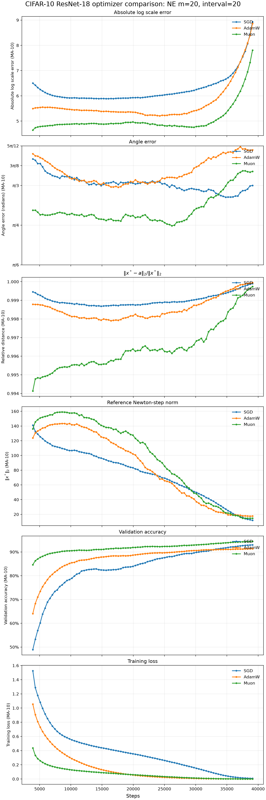
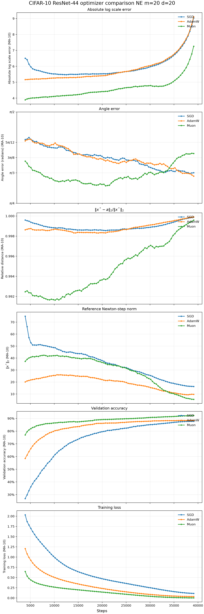
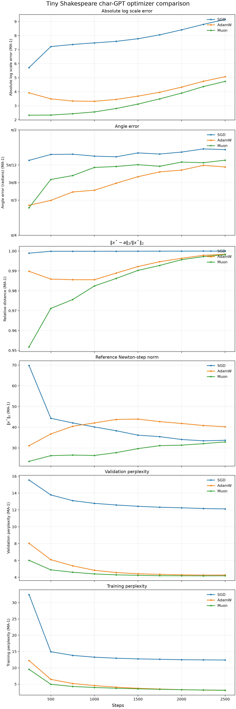
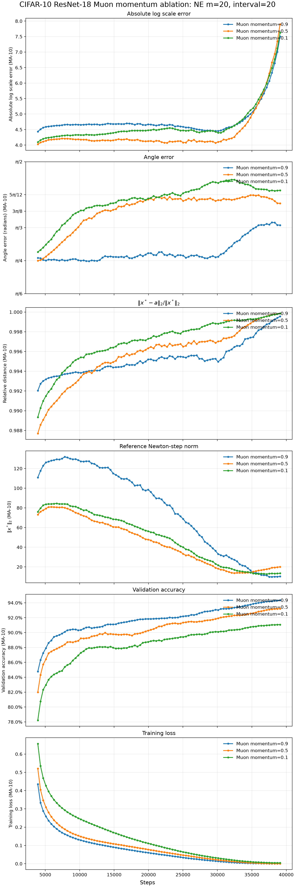
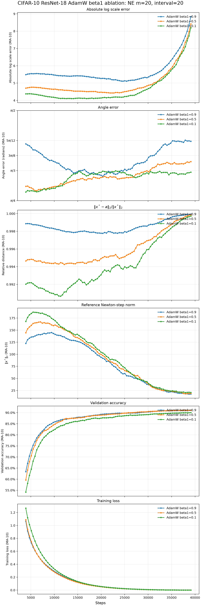
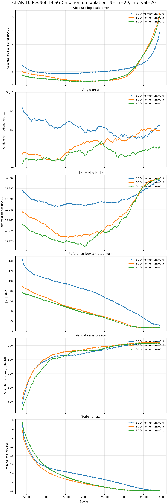

01
Scale error
\(E_{\mathrm{scale}}=\left|\log(A/X)\right|\)
Zero means equal lengths; reciprocal ratios have equal error.
Remote experiment dashboard
Optimizer displacement measured against an estimated Newton step. Every panel below uses the same six-row analysis layout.
Metric geometry
\(X=\|x^*\|_2\) \(A=\|a\|_2\) \(P=\|\operatorname{Proj}_{a^\perp}(x^*)\|_2\)
\(E_{\mathrm{scale}}=\left|\log(A/X)\right|\)
Zero means equal lengths; reciprocal ratios have equal error.
\(\theta_0=\arcsin(P/X)\) \(E_{\mathrm{angle}}\in\{\theta_0,\pi-\theta_0\}\)
The branch is selected by the estimator's \(-a^\mathsf{T}g\) orientation test.
\(D=\sqrt{X^2+A^2-2XA\cos\theta}\) \(E_{\mathrm{dist}}=D/X\)
The CSV records \(D\); the dashboard plots its relative form.
\(P/X\) determines the sine magnitude, but not whether the angle is acute or supplementary. The sign test supplies that missing orientation. No tolerance is added to any denominator.
ResNet-18 · CIFAR-10

ResNet-44 · CIFAR-10

Char-GPT · Tiny Shakespeare

ResNet-18 · CIFAR-10

ResNet-18 · CIFAR-10

ResNet-18 · CIFAR-10
